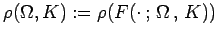

Inhalt Index DeskTop Bronstein

 Dynamische Systeme und Chaos Bifurkationstheorie, Wege zum Chaos Übergänge zum Chaos Auflösung eines Torus
Dynamische Systeme und Chaos Bifurkationstheorie, Wege zum Chaos Übergänge zum Chaos Auflösung eines Torus


Die Abbildung F aus (17.44) ist für ein orientierungstreuer Diffeomorphismus, da ist. Bei K = 1 ist F kein Diffeomorphismus mehr, aber noch ein Homöomorphismus, während für K > 1 die Abbildung nicht mehr invertierbar und damit auch kein Homöomorphismus mehr ist. Im Parameterbereich ist für die Rotationszahl  definiert. Sei  fixiert. Dann hat auf [0,1] folgende Eigenschaften:
fixiert. Dann hat auf [0,1] folgende Eigenschaften:
Für jedes  ist
ist  also eine CANTOR-Funktion. Der Graph von , der auf der rechten Abbildung gezeigt ist, heißt Teufelstreppe (devil's staircase).
also eine CANTOR-Funktion. Der Graph von , der auf der rechten Abbildung gezeigt ist, heißt Teufelstreppe (devil's staircase).
Das Bifurkationsdiagramm von (17.44) ist auf der linken Abbildung zu sehen. Von jeder rationalen Zahl auf der  -Achse geht ein schnabelförmiges Gebiet (ARNOLD-Zunge) mit nicht leerem Inneren aus, in dem die Rotationszahl konstant und gleich der rationalen Zahl ist. Ursache für das Entstehen der Zungen ist eine Synchronisation der Frequenzen (Frequenzkopplung (frequency locking)).
-Achse geht ein schnabelförmiges Gebiet (ARNOLD-Zunge) mit nicht leerem Inneren aus, in dem die Rotationszahl konstant und gleich der rationalen Zahl ist. Ursache für das Entstehen der Zungen ist eine Synchronisation der Frequenzen (Frequenzkopplung (frequency locking)).
Für überlappen sich diese Gebiete nicht. Von jeder irrationalen Zahl auf der  -Achse geht eine stetige Kurve aus, die immer die Gerade K = 1 erreicht. In der ersten ARNOLD-Zunge mit
-Achse geht eine stetige Kurve aus, die immer die Gerade K = 1 erreicht. In der ersten ARNOLD-Zunge mit  hat das dynamische System (17.44) Ruhelagen. Ist K fixiert und wächst
hat das dynamische System (17.44) Ruhelagen. Ist K fixiert und wächst  an, so verschmelzen auf dem Rand der ersten ARNOLD-Zunge zwei dieser Ruhelagen und heben sich dabei gleichzeitig auf. Im Ergebnis einer solchen Sattelknoten-Bifurkation entsteht ein auf S1 dichter Orbit. Ähnliche Erscheinungen lassen sich beim Verlassen der anderen ARNOLD-Zungen beobachten.
an, so verschmelzen auf dem Rand der ersten ARNOLD-Zunge zwei dieser Ruhelagen und heben sich dabei gleichzeitig auf. Im Ergebnis einer solchen Sattelknoten-Bifurkation entsteht ein auf S1 dichter Orbit. Ähnliche Erscheinungen lassen sich beim Verlassen der anderen ARNOLD-Zungen beobachten.
Für K > 1 ist die Theorie der Rotationszahlen nicht mehr anwendbar. Die Dynamik wird komplizierter, und es findet ein Übergang zum Chaos statt. Dabei treten, ähnlich wie im Falle der FEIGENBAUM-Konstante, weitere Konstanten auf, die für bestimmte Klassen von Abbildungen, zu denen auch die Standardkreisabbildung gehört, gleich sind. Eine davon wird im folgenden beschrieben.
Die irrationale Zahl heißt Goldenes Mittel und besitzt die einfache Kettenbruchdarstellung
| (17.92) |
Durch sukzessives Abschneiden des Kettenbruches erhält man eine Folge {rn} von rationalen Zahlen, die gegen  konvergiert. Die Zahlen rn lassen sich in der Form darstellen, wobei Fn FIBONACCI-Zahlen sind, die sich durch die Iterationsvorschrift
konvergiert. Die Zahlen rn lassen sich in der Form darstellen, wobei Fn FIBONACCI-Zahlen sind, die sich durch die Iterationsvorschrift
| (17.93) |
mit den Startwerten F0 = 0 und F1 = 1 bestimmen lassen. Sei nun der Parameterwert von (17.44), für den ist und sei jeweils der am nächsten liegende Wert, für den ist. Eine numerische Analyse ergibt den Grenzwert .